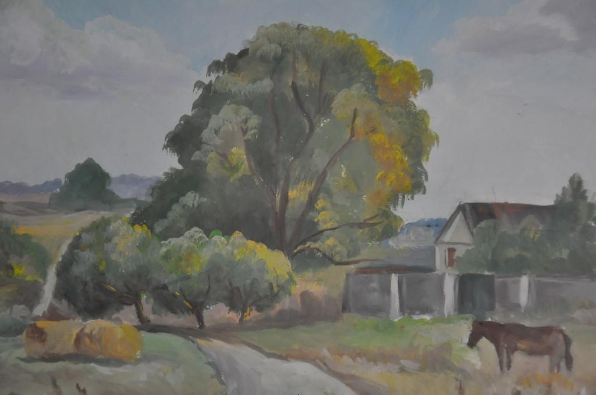
ИСТОРИЯ СЕЛА
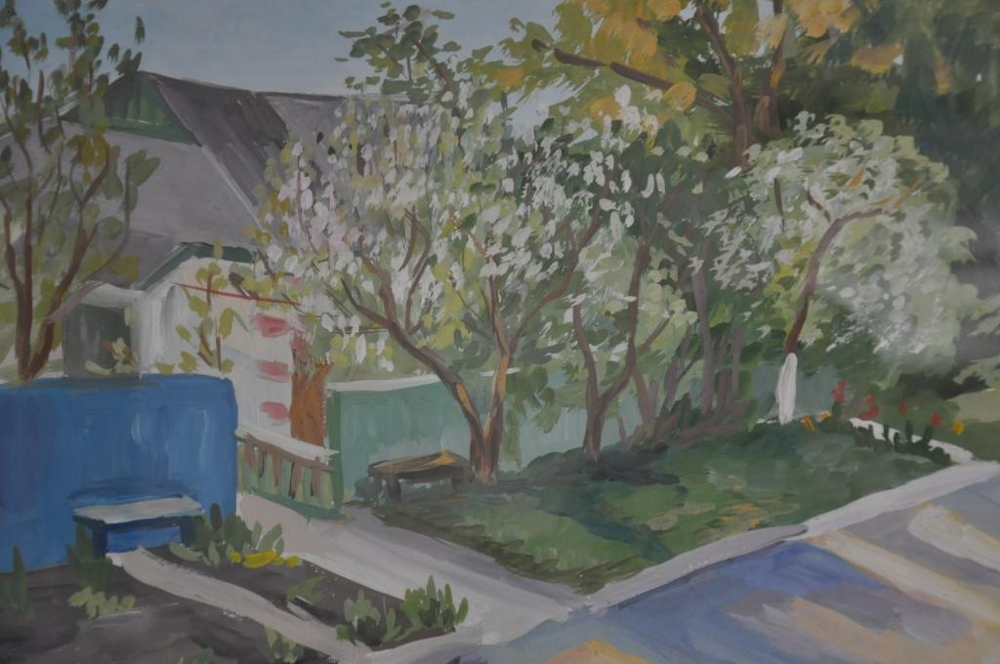
ИСТОРИЯ МУЗЕЯ
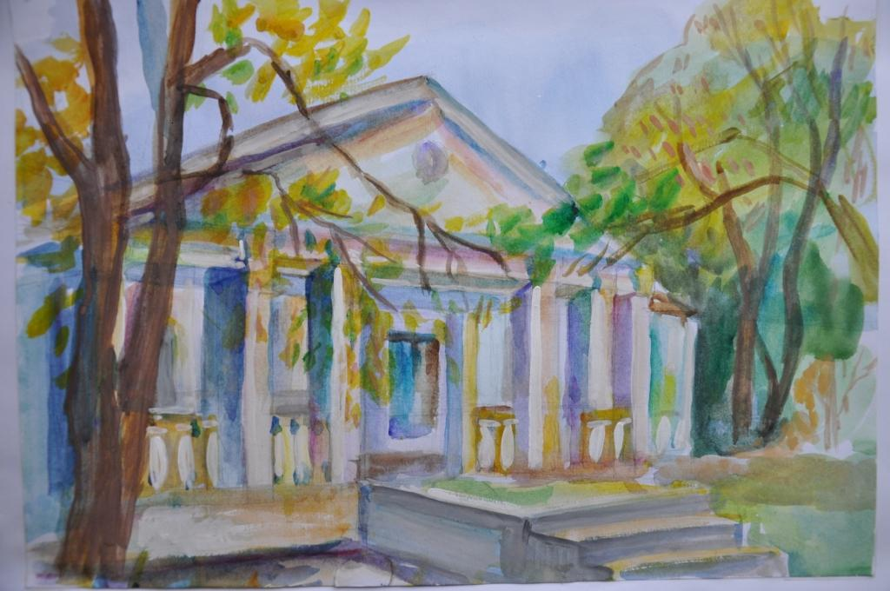
Село основано во второй половине XIX в. и расположено у истока реки Большая Казьма в довольно глубокой балке, окруженной небольшой возвышенностью. Расстояние до районного центра составляет 20 км. Здесь проживают 6 тыс. человек.
История его возникновения тесным образом связана с пореформенной колонизацией Кубанской области. В 1867г. крестьянам-переселенцам Орловской, Харьковской и других губерний, из казенных земель Зеленчукского и Урупского округов, была выделена земля под поселение. В 1875 году в селении насчитывалось 293 двора. Жителей – 962 мужского пола и 872 женского пола.
В 1876 на средства прихожан (16 тыс. рублей) в центре селения была возведена деревянная церковь во имя Св. Апостола Иоанна Богослова. В 1874 г. в селе открылась первая школа. В годы первой русской революции Баталпашинский отдел был охвачен мощными аграрными волнениями, принимавшими характер разгрома экономий. 1914 г. в селении насчитывалось 1541 двор и 11240 жителей (коренных и иногородних). Имелись почтово-телеграфное отделение, кредитное товарищество. С началом I - й мировой войны, всех казьминцев 1893 года рождения призвали на военную службу и направили на Турецкий фронт.
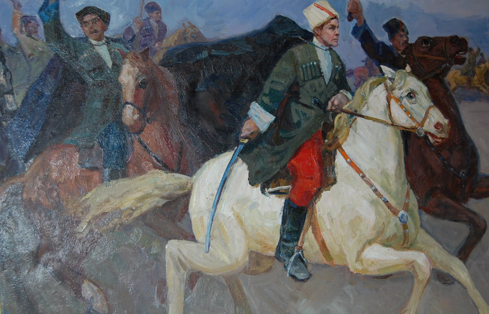В декабре 1917 г. в селе была провозглашена Советская власть. В начале 1918 г. был образован ревком, первым председателем которого был избран Т.П. Рест. В годы гражданской войны в Казьминском были организованы восемь красногвардейских отрядов для борьбы с контрреволюцией. В эти отряды вливались отряды с хуторов волости – Балуевского, Беловского, Васильевского и Игнатовского. Разрозненные отряды были объединены под командованием Я.Ф. Балахонова, заместителем которого стал казьминец Занченко. Весь 1919 год жители Казьминского провели под властью белых. Вскоре село занял 305-й стрелковый полк Таманской дивизии. За время пребывания в селе красноармейцам неоднократно приходилось отбивать атаки белых из станицы Отрадной и аула Эрсакон. По неполным данным в боях за советскую власть погибло более 500 казьминцев.
В 1921 – 1922 гг. на юге России разразился голод. Люди, спасаясь от голодной смерти, бежали с насиженных мест. В Казьминском появилась масса беженцев. В конце 1921 г. в селе была организована комиссия помощи голодающим. В годы НЭПа экономика постепенно восстанавливалась. Жизнь сельчан принимала нормальный облик. Вплоть до коллективизации продолжался выход казьминцев на хутора.
В период НЭПа село особенно быстро росло. Оформились 4 квартала. Бывшие иногородние, получили земельные наделы под усадьбы. На левом берегу Казьмы вырос новый 5-й квартал. Появились новые улицы. Для обработки полученных наделов нужны были с/х инвентарь и тяговая сила. Некоторые семьи не имели возможности самостоятельно вести хозяйство. Поэтому они стали объединяться в товарищества по совместной обработке земли (ТОЗы). Первоначально в ТОЗы входили 3-5 дворов. Позже 10-30. Среди них – "Путь хлебороба”, "Наш труд”, "Общий труд”, "Крестьяне”, "Просвещенец”, "Дружба” и др.
В 1929 г. в Казьминском были созданы первые колхозы: "им. 78 Кавполка”, "Большевик”, "Ударник”, "им. Евдокимова”, и "им. Молотова”. Их создание проходило не всегда гладко. Зачастую в колхозы загоняли насильно, грозя все отобрать и обложить налогами. Случались и бунты крестьян выступавших против распашки выпасной земли. Курс на сплошную коллективизацию предусматривал ликвидацию кулачества. С индивидуальным крестьянским хозяйством было покончено. Социалистические предприятия стали преобладающими в сельском хозяйстве.
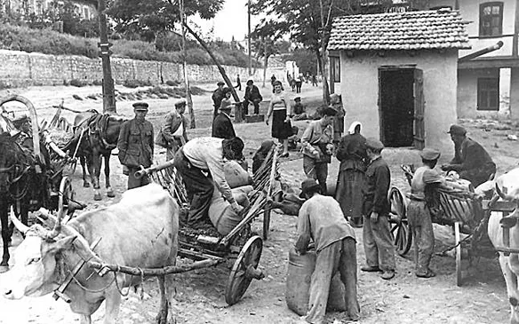Непростыми в жизни села стали 30-е годы. Зимой 1932-1933 на Кубани вновь разразился голод. Но последствия были куда более страшными, чем голод 20-х. В Казьминском умерли сотни людей. После голода село долго поднималось на ноги. В 1932 г. в Казьминском была организована МТС, обслуживавшая 10 колхозов Невинномысского района. В начале 30-х годов в селе была закрыта, а потом и разрушена церковь. Духовная жизнь возродилась только в 1944 г., когда была официально зарегистрирована православная община. В 1927 г. в Казьминском открылась первая семилетняя школа, В 1930 построили новую семилетнюю школу. В 1934 ее преобразовали в неполную среднюю.
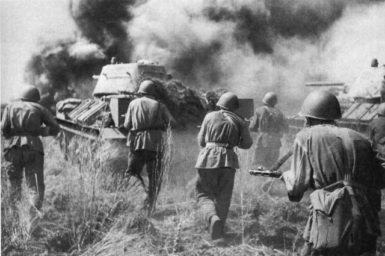Мирная жизнь была прервана в июне 1941 г. Более 2000 казьминцев ушли на фронт. Большинство из них сражались в составе 17 Кубанского казачьего кавалерийского корпуса, который участвовал в тяжелых боях при обороне и освобождении Северного Кавказа. С августа 1942 г. Либкнехтовский район был оккупирован. Часть немецких солдат расквартирована в Казьминском. При отступлении они занялись грабежом. Было частично разорено колхозное имущество. 21 января 1943 г. Казьминское было освобождено от фашистов. В этот же день в селе состоялся митинг, на котором был избран председателем сельского Совета командир партизанского отряда Г.Е. Занченко. К весне 1943 г. собрали семена, провели сев. Заработали колхозные предприятия: мельница, маслобойня, молокозавод и др. важные объекты, в том числе и МТС. Все это – благодаря самоотверженному труду женщин, подростков и стариков. С войны не вернулось около 600 казьминцев. За мужество и героизм, проявленные в боях за Родину, сотни казьминцев были награждены орденами и медалями. Среди них два Героя Советского Союза: Омельянюк Ф.Т. и Подгорный Т.Н. Ныне в центре села находиться памятник погибшим односельчанам.
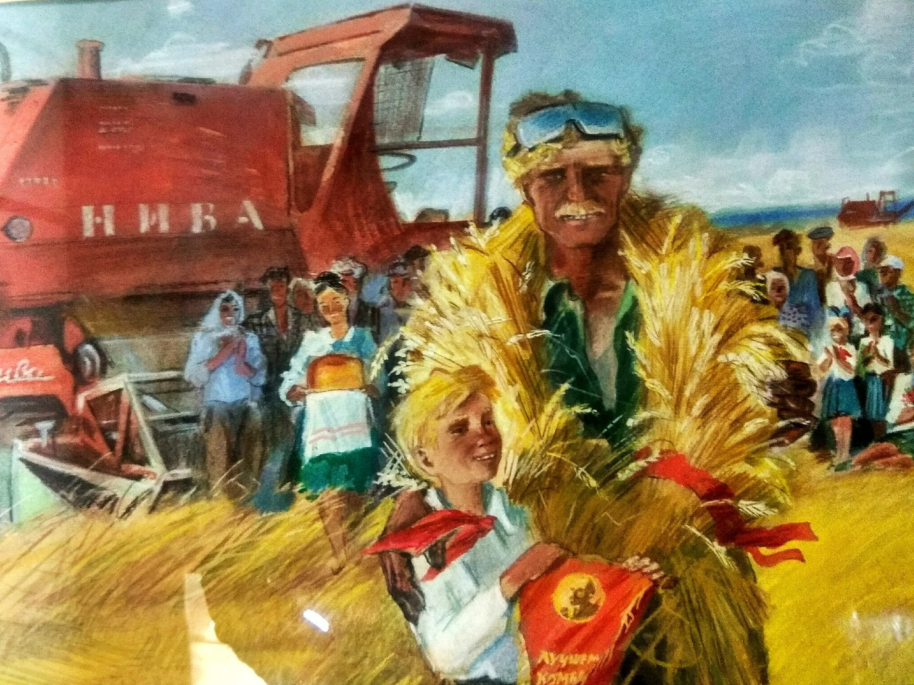В 1955 г. четыре колхоза объединились в один – "Казьминский”. Казьминцы приняли участие в освоении целинных земель. С 1939 по 1971 год председателем колхоза был Герой Социалистического труда Жиляев Г.З. С 1974 по 2007г. возглавлял хозяйство - А.А Шумский. Колхоз "Казьминский” был награжден переходящим Красным Знаменем ЦК КПСС, Совмина СССР, ВЦСПС и ЦК ВЛКСМ, занесен на Всесоюзную Доску Почета на ВДНХ. А.А. Шумскому было присвоено звание Героя Социалистического Труда. Колхоз – племзавод "Казьминский” и после реорганизации по-прежнему остается ведущим с/х предприятием в крае. Растениеводство и животноводство – основные отрасли хозяйствования. Сделав ставку на развитие рыночных отношений, руководство колхоза наладило прочные деловые контакты не только в стране, но и за рубежом (Франция, Англия и США). Ныне колхоз входит в десятку крупнейших агропредприятий России. В 2007 г. председателем колхоза стал С.А.Шумский. В селе имеются средняя школа, историко-краеведческий музей, Дом культуры, детские сады, библиотека, почта, узел связи, стадион, тренажёрный и несколько спортивных залов. На базе термальных источников с 1989г. действует лечебно-оздоровительный комплекс с плавательным бассейном. Рядом с селом недавно возведён ещё один плавательный бассейн. Село растет и благоустраивается. Газифицировано 95% дворов, более половины имеют водопроводы. Центральная часть и основные улицы асфальтированы. В 2007 году при помощи правления колхоза и жителей села построена новая церковь. Зарегистрированы также общины баптистов и молокан. Автобусное сообщение связывает село с районным центром (18 км), г. Невинномысском (25 км), г. Ставрополем (80км). В Казьминский сельсовет входит хутор Саратовский, расположенный в 9 км от села. В настоящее время в нем проживает 0,3 тыс. человек.
Формирование музейной коллекции началось ещё в 50-е годы XX века, когда усилиями учащихся и учителей казьминских школ в учебных кабинетах были созданы экспозиции, в которых были представлены предметы крестьянского быта, а также материалы об участниках Гражданской войны. Работа по сбору материала началась по инициативе директора школы с 1945 по 1962гг., историка по профессии, участника Великой Отечественной войны Василия Гавриловича Макаренко. По воспоминаниям Валентины Константиновны Солдатовой, в 1955-56 годах Василий Гаврилович предложил учителям истории Зинаиде Петровне Тараненко и Наталье Сергеевне Васильевой организовать музейную коллекцию. Был составлен план работы. Ученикам было предложено начать сбор материала для будущего музея. Руководили этой работой, как упомянутые выше преподаватели, так и завуч школы Вера Владимировна Аверкина. В тот период стали впервые собирать воспоминания участников Великой Отечественной войны, сведения о вдовах, тружениках тыла. Силами учащихся и классных руководителей материал оформлялся в альбомы. Изготовлялись витрины.
В середине 60-х годов, накануне столетия села, учитель ин.языков Николай Аристидович Дукати написал «Краткую историческую справку о селе Казьминском». В ней он впервые обобщил наиболее важные события, происходившие в нашем селе с момента его основания по 1964 год. При работе над историей села Н.А. Дукати, вместе с учениками, собрал и новые экспонаты для музейного уголка. Все экспонаты размещались первоначально в кабинете истории. С вводом в строй нового здания школы (ныне здание начальной школы, на 2-м этаже которой и размещается наш музей) экспонаты были размещены в актовом зале (ныне зал современной истории). Свои музейные коллекции имелись и в других школах села. Так в 8-летней школе музейный уголок был создан в 1963 году. Об этом также упоминает В.К.Солдатова. Работой по сбору материала руководили её директор Зинаида Ивановна Кузьминова, завуч Елена Константиновна Белан, учитель истории Тараненко Зинаида Петровна.
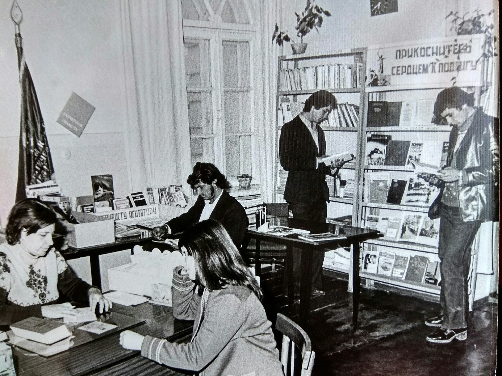Пионерская организация школы с 1970-х годов носила имя Татьяны Соломахи – участницы Гражданской войны, первой женщины-большевички в Приурупье. Татьяна была учительницей в станице Попутной. В 1918 году в с.Казьминском она попала в плен к белым. После многодневных пыток она была казнена. Казьминские школьники организовали переписку с музеем станицы Отрадной, родными Татьяны Соломахи. Эта переписка позволила собрать новые материалы об эпохе Гражданской войны на Кубани. Сейчас многочисленные документы, собранные учениками и учителями в то время, хранятся в фондах школьного музея. Среди них и уникальные воспоминания участников Гражданской войны. Есть и воспоминания тех казьминцев, кто «рука об руку» воевал вместе с Яковым Балахоновым, Иваном Кочубеем. В сентябре 1975 года Казьминская 8-летняя школа вошла в состав Казьминской средней школы. Но в это время активно шло создание единого сельского музея. Поэтому, все музейные предметы, хранившиеся в школах, были переданы в фонды нового музея. Таким образом, в основу музейного собрания сельского музея были положены коллекции школьных музейных уголков.
Материалы об истории создания музея сохранились до настоящего времени. Это несколько дел, которые выделены в отдельный фонд. В делах, подшитых ещё самим И.И. Дмитренко, сосредоточена многочисленная переписка ветерана с руководством села и правлением колхоза, архивами и музеями страны. Здесь различные обращения и ходатайства, ведомости, акты приёма и сдачи, описи и другие отчётные документы, переписка с поисковыми отрядами школьников Кубани и т.д. Весь этот материал сейчас является для нас важным историческим источником. Собственно, организатор музея, каковым мы по праву считаем Ивана Ивановича, заложил традицию документирования истории села в нашем музее. Вне всякого сомнения, осознавая важность такового для будущих исследователей. Благодаря его скрупулезной работе по систематизации документов мы имеем возможность изучать историю Казьминского в годы советской власти.
А теперь, рассмотрим вопрос, связанный с организацией и открытием музея. В марте 1972 года И.Дмитренко через сельсовет и правление колхоза, обратился к жителям села с просьбой о необходимости организации в селе музея и возведения мемориала погибшим в годы Гражданской и Великой Отечественной войн. У Дмитренко уже имелся подобный опыт. На его счету организация нескольких музеев и памятников в Запорожье. Он говорил: «Село Казьминское богато своими революционными боевыми и трудовыми традициями наших земляков-односельчан. Проходят годы, и многое забывается, а чтобы восстановить это для будущих поколений – надо что-то делать». Он также считал, что памятник и музей будут конкретным выражением великой благодарности и высокого уважения односельчан к тем, кто погиб, защищая завоевания Великого Октября. При организации музея, необходимо было собрать огромную информацию об истории села. И.Дмитренко отдавал себе отчет, что придется обращаться за помощью к его жителям, но многие из них не смогли бы самостоятельно записать воспоминания о прошлом. Поэтому, в том же 1972 году, он предложил создать комиссию для сбора материалов и экспонатов будущего музея. В её состав он предлагал включить «руководящих работников» села, колхоза и школы. А помимо них - Героя Социалистического Труда, одного из первых председателей колхоза – Григория Жиляева, Василия Селивёрстова – председателя созданного в те годы Совета ветеранов Войны и Труда, Николая Кузьменко, Гавриила Прасолова, Петра Луганского – бывших председателей казьминского с/совета, ветеранов войны, Павла Гаращенко – ветерана ВОВ, ставшего впоследствии директором открывшегося в 1975 году сельского музея, и других.
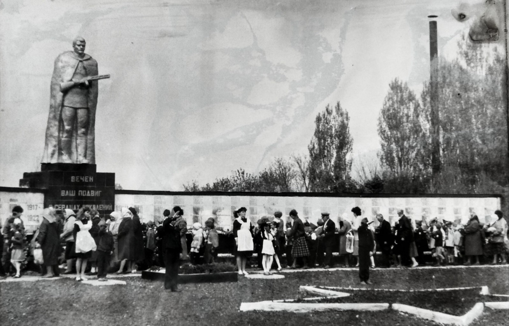Следует отметить, что с начала 1970-х годов в стране развернулась масштабная кампания по увековечиванию памяти погибших в годы ВОВ. Именно в эпоху Л.И.Брежнева 9 мая было восстановлено в статусе государственного праздника и повсеместно стали открываться военные мемориалы и школьные музеи. Таким образом, организация музея и открытие мемориала проходили накануне празднования 30-летия Победы. В 1973 году И.Дмитренко оформил для архива будущего музея первые десять дел. Среди которых - летопись села, списки погибших в войнах односельчан, воспоминания участников Гражданской войны, письма односельчан, а также материалы для научно-вспомогательного фонда. Эти дела были переданы И.Дмитренко в адрес председателя Совета ветеранов войны и труда В.Г.Селивёрстова 6 августа 1973 года. Проживая в Запорожье, Дмитренко постоянно интересовался, как идет дело с оборудованием музея. Так, в одном из своих писем председателю сельсовета В.А.Павленко от 24 октября 1974 он говорил, что, как только в селе найдут помещение для народного музея, он сразу же приедет и займется его оборудованием: «Буду жить в Казьминке, пока не закончу оборудование музея и не откроем его для всеобщего посещения. Надо сделать так, чтобы памятник и музей в Казьминке были лучшими в крае».
Окончательное решение об открытии музея было принято на 11-й сессии Казьминского исполкома 7 февраля 1975 года. Согласно паспорта музея, датой его основания считается май 75-го года. По другим документам, первых своих посетителей музей принял 18 сентября 1975 года. Музей был открыт в одной из комнат сельского клуба (ныне ДК). Мы располагаем документами, из которых следует, что общая площадь музея составляла 60 кв.м. Из них под экспозицией на 1977 год было занято 25 кв.м. Помещения для хранения фондов отсутствовали. Собственно говоря, на тот момент в таковых не было необходимости, так как первоначально в его фондах насчитывалось всего 24 экспоната.
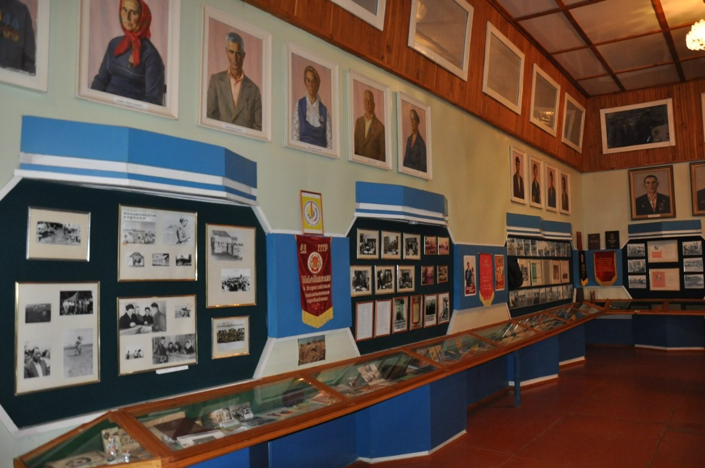Функции руководителя музея первоначально выполнял организатор музея – И.И. Дмитренко. В период с весны по осень 1975 года он вёл переписку с краевым управлением культуры, центральным музеем вооружённых сил СССР, министром культуры РСФСР Ю.С. Мелентьевым по вопросам обеспечения Казьминского музея оружием советских воинов периода Гражданской и Великой Отечественной войн или же их муляжами. В наш музей из архива министерства обороны СССР в г.Подольске, по ходатайству И.Дмитренко были высланы копии наградных листов-представлений к присвоению звания Героя Советского Союза нашим землякам: Ф.Т. Омельянюку и Т.Н. Подгорному.
По просьбе И.Дмитренко, из Центрального музея революции СССР, в наш музей были высланы фотопортреты советских полководцев. Следует отметить, что сотрудничество руководства села с центральным музеем революции началось еще в середине 1960-х годов. Так, в ноябре 1965 года научные сотрудники музея Д.В. Айзиков и И.Я. Жибицкий приезжали в наше село для сбора материалов о казьминцах, боровшихся за установление советской власти на Кубани. В частности, председателем казьминского сельского Совета Н.М. Кузьменко им были выданы во временное пользование «Краткая историческая справка о селе Казьминском», написанная Дукати Н.А. и Киселёвым. С.М., а также воспоминания И.О. Дергачёва - помощника военного комиссара Баталпашинского отдела Г.Е. Пономаренко о Гражданской войне.
25 сентября 1975 года все документы и имущество музея по акту были переданы вновь назначенному Павлу Егоровичу Гаращенко – ветерану войны, офицеру в отставке, члену КПСС 1942 года. П.Е. Гаращенко руководил музеем до сентября 1982 года. За годы руководства Казьминским историческим музеем Боевой и Трудовой Славы, как официально стало именоваться это учреждение, Павел Егорович проводил комплектование фондов. Музей пополнялся различными предметами и документами, представляющими интерес для настоящего и будущего поколений. Среди них: оружие периода Гражданской и Великой Отечественной войн, предметы быта, старинный сельскохозяйственный инвентарь, орденские знаки, медали с документами и личные вещи заслуженных односельчан, похвальные и почетные грамоты, юбилейные значки; интересные фотографии из истории села, колхоза, бумажные денежные знаки, монеты.
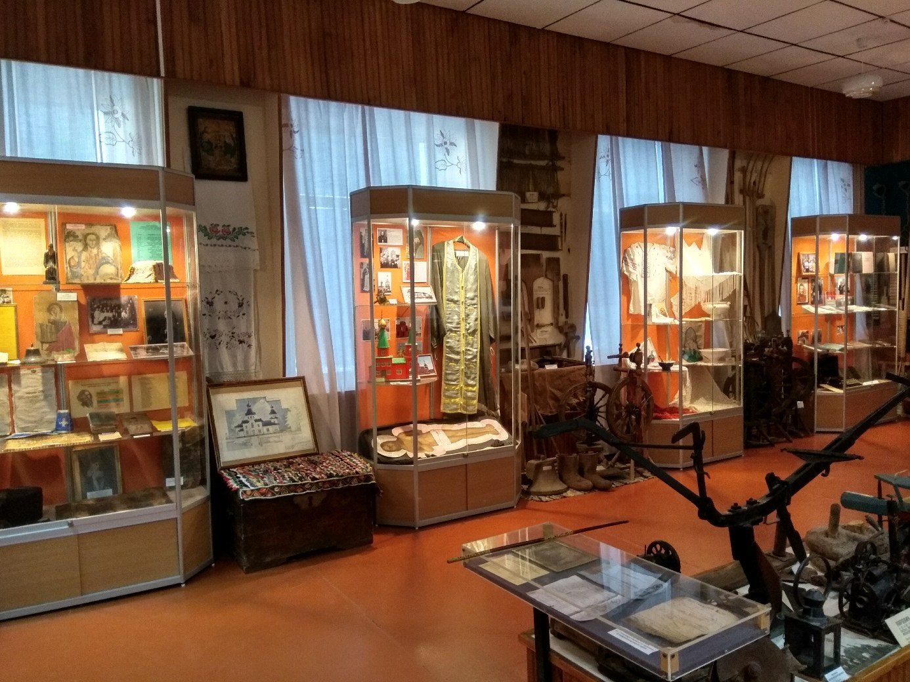Основатель музея И.Дмитренко также передал в 1977 году в фонды музея 30 книг военно-патриотической направленности из личной библиотеки, среди них и уникальный фолиант «Атлас офицера» 1947 года. Им же в 1978 году были подарены музею револьвер системы «Наган», пистолет системы «Фроммер», офицерские шпага и кортик, а также авиационные значки и книги об истории авиации. Тогда же, в музей поступили две копии фильма «Память о казьминцах – священна», рассказывающих об открытии в селе мемориала Вечной Славы в мае 1975 года. В 2010 году, спустя 35 лет, материалы с кинопленки были переведены на цифровой носитель.
Экспозиция музея была оформлена по варианту, предложенному И.Дмитренко ещё в 1972 году. Она была разделена на четыре исторических этапа: Гражданская воина и становление Советской власти, коллективизация, Великая Отечественная война, «Казьминцы на путях к коммунизму». На момент открытия музея экспозиция была дополнена разделом «Дореволюционная история села». Сразу после открытия, музей стал центром притяжения внимания гостей и жителей села. Согласно книгам учета посетителей, с сентября 1975 по август 1977 его посетили 5700 тыс. человек. Из них только в период с января по август 1977 года - 3000 человек. К 1982 году количество экспонатов увеличилось до 118.
7 сентября 1982 года заведующим музеем становится Иван Ильич Доценко - ветеран советско-финской и Великой Отечественной войн, участник битвы за Берлин. В 1980-е годы он возглавлял Совет ветеранов войны и труда с.Казьминского и был близким другом П.Е. Гаращенко. Оставался Доценко на этой должности до 13 февраля 1985 года.
В начале 80-х годов была проведена работа по систематизации данных об участниках ВОВ. Вместе с работниками военно-учетного стола были уточнены списки ветеранов, а также погибших и пропавших без вести. Тогда же в фонды музея поступило огромное количество фотографий ветеранов, сделанных к 35-ти и 40-тию победы. Число подлинных музейных предметов к 1983 году составило 144 экземпляра. Особое внимание И.Доценко уделял формированию экспозиции Великой Отечественной войны. При нём, для музея был изготовлены капсулы из нержавеющей стали, в которых хранилась священная земля из городов-героев. Именно в то время в нашем музее было положено начало этой коллекции. Ныне, в витринах посетители могут увидеть землю с Мамаева кургана г.Волгограда, Сапун-горы и Малахова кургана г.Севастополя, Трептов-парка г.Берлина, землю из Бреста.
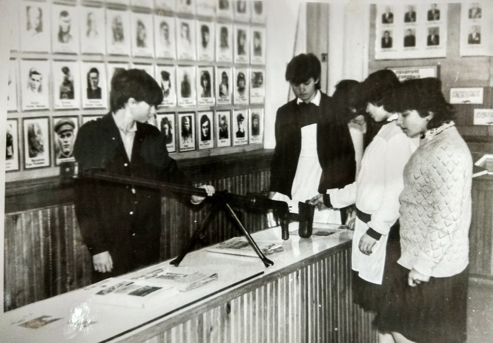С сентября 1982 по февраль 1985 года Казьминский музей посетили 10.961 человек. (Для справки: в селе на тот момент насчитывалось чуть более 5 тыс. жителей). Весьма активно музей сотрудничал с образовательным учреждением села, учащиеся которого были основными его посетителями. Частыми гостями были учащиеся городов Невинномысска и Ставрополя. В музее проводились тематические экскурсии, классные часы и уроки мужества. Сам Иван Ильич был замечательным рассказчиком. Ветерану двух войн было о чём рассказать подрастающему поколению. И.Доценко был и сам частым гостем в школе, участвуя в различных фестивалях и других мероприятиях.
Иван Доценко регулярно посещал методические семинары руководителей музеев на общественных началах, проходившими на базе ставропольского краеведческого музея им. Г.Праве и его филиалов. На базе музея также проводились выездные выставки. Так, ярким событием в культурной жизни села стала выставка холодного и огнестрельного оружия XVIII-XIX вв. народов Северного Кавказа из фондов Ставропольского краеведческого музея, проходившая в нашем селе в 1984 году.
Руководители музея, а также его организатор следили за состоянием памятников в селе Казьминском: памятник В.И. Ленину, мемориал Вечной Славы и братская могила на сельском кладбище. Через совет ветеранов, исполком, правление колхоза «Казьминский» и школу, обеспечивали уход и своевременный ремонт памятников. Очень скоро ремонт начался и в самом музее.
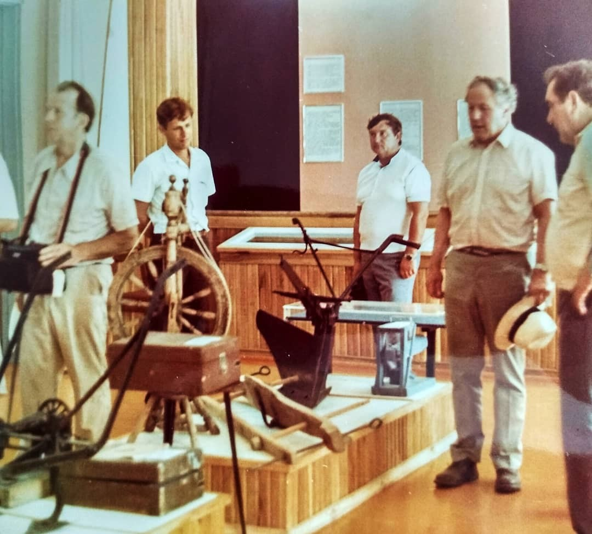В 1983 году в селе было завершено строительство нового здания школы, куда были переведены учащиеся из двух старых корпусов. В прежнем здании школы, расположенном на улице Комсомольской, разместился Казьминский Дом пионеров. Руководство колхоза приняло решение о расширении музея и переносе его коллекций в освободившиеся аудитории, расположенные на втором этаже старого здания школы. В декабре 1983 года И.Дмитренко в одном из своих писем на имя И.Доценко интересовался: «переселился ли с музеем в бывшую школу? Располагай все по классам. Старые стенды не разоряй. Там хватает места для старых и новых». Тогда же впервые была выдвинута идея об организации в музее кинозала. Он предлагал приобрести киноаппарат и организовать в актовом зале места для зрителей. В 1984 году начался косметический ремонт помещений выделенных для музея. Осуществлялся он за счет средств колхоза. Увеличение площади позволило расширить и экспозицию, которая была размещена в четырех залах: «История села и колхоза», «Гражданская война», «ВОВ», «Село и колхоз сегодня»
В феврале 1985 года Иван Доценко по состоянию здоровья вынужден был передать бразды правления Александру Александровичу Кушнареву.
С 1985 года музей был закрыт, поскольку в нем осуществлялась масштабная реконструкция с привлечением специалистов из Ставропольского краеведческого музея. Ими была разработана концепция выставочных залов. Был разработан дизайн помещений. Так, в одном стиле были выполнены витрины и стенды с подсветкой, в зале истории колхоза были размещены портреты передовиков производства, исполненные артелью кисловодских художников на холсте. Новшеством для того времени было использование в оформлении залов огромных слайдов с видами села и людей на производстве.
Была оборудована оружейная комната и установлена сигнализация. В экспозиции музея появился раздел боевого оружия (1990 году в связи с обострившимися политическими событиями в СССР оно было изъято из фондов нашего музея). В это же время в музее появился, пожалуй, наиболее яркий, экспонат – спускаемая капсула космического аппарата, в которой в 1982 году возвратилась на Землю космонавт С.Е.Савицкая. Она является подарком председателя колхоза, героя Социалистического труда А.А.Шумского.
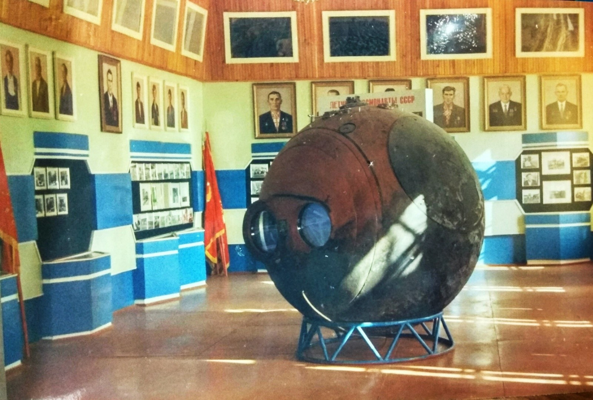В 1989 году музей вновь распахнул свои двери в новом просторном помещении. Благодаря усилиям школьников и преподавателей он вновь пополнился новыми экспонатами. С 1992 по 2005 год музеем заведовала Н.И. Панасицкая. В этот период количество экспонатов достигло 1200.
1 июля 2005г. на базе историко-революционного музея с.Казьминского, (именно так назывался музей до начала 1990-х гг.) был создан историко-краеведческий музей МОУ СОШ №16. В апреле 2006г музей прошел аттестацию и был зарегистрирован в Федеральном центре детско-юношеского туризма и краеведения.
В настоящее время фондах школьного музея более 2500 подлинных экспонатов, среди которых археологические и этнографические материалы, нумизматическая коллекция, фото- и кинодокументы, награды, дореволюционные печатные издания, предметы декоративно-прикладного и изобразительного искусства, предметы культа, а также архивные документы, имеющие музейное значение. В настоящее время музей принимает активное участие в учебно-воспитательном процессе, используя различные формы и методы музейной педагогики. На его базе проводятся занятия объединений дополнительного образования («Мир музея», «Краевед»), проводятся экскурсии, музейные уроки, творческие встречи, читаются лекции. Среди ведущих направлений в работе музея являются собирательская, выставочная и научно-исследовательская деятельность.
1867 год. У истока степной реки Большая Казьма крестьянами-переселенцами было основано село Казьминское.
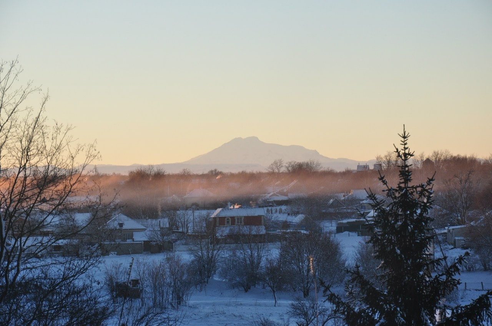Несмотря на тяжести освоения новых земель уже в 1874 году по решению схода открывается первая школа, которую тогда называли народной. 30 учеников обучал один из немногих грамотных людей села Николай Игнатьев.
На протяжении последующих лет растет число и начальных учебных заведений, и число крестьянских ребятишек, получавших в них элементарное образование. Наше село помнит имена первых народных учителей и наставников: Пётр Яковлевич Станицкий, Павел Никитин Хоровский, Мария Васильевна Ляпидевская.
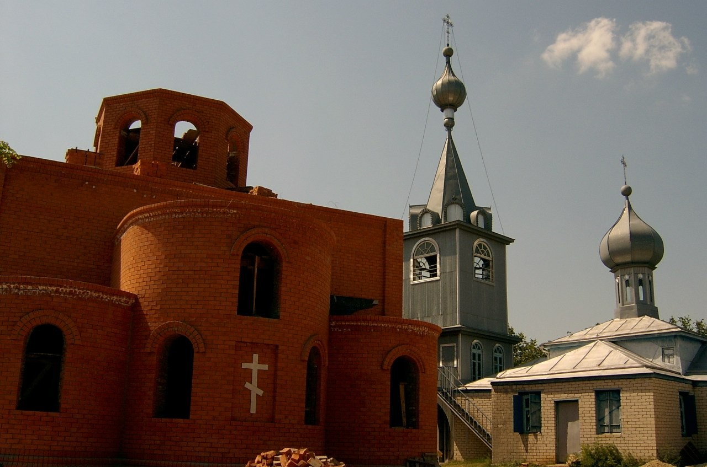Просвещение во второй половине XIX – начале ХХ вв. было неразрывно связано с церковью. И в нашем селе в 1891 году открылась церковно-приходская школа. Её заведующими были священники: Симеон Кулик, а затем Дмитрий и Николай Польские. Однако, из-за нехватки мест в школах большинство детей (почти три четверти) были лишены возможности получить образование. Потому в течение десятилетия, начиная с 1896 года года, в селе Казьминском открывается несколько небольших частных школ, в которых преподавали грамотные крестьяне Иван Руденко, Георгий Бондарь.
Подвижнический труд первых учителей не был напрасным. Ведь школа уже в те времена давала не только знания, но и воспитывала детей, несла в сельскую жизнь свет духовности и культуры.
Например, вот как газета «Кубанские областные ведомости» за 1908г. описывает по сегодняшним меркам рядовое, а для села Казьминского в начале 20 века диковинное событие: новогоднюю елку в школе 1 января: «Еще с утра ученики стали толпиться возле училища, чтобы взглянуть хотя одним глазком на елку.»
Сколько толков-разговоров слышалось между учащимися о елке. Вдруг настала тишина, подняли занавес и дети увидели во всем своем блеске зажженную елку. В начале заметно было дети оторопели, увидя в первый раз елку, но потом, освоившиеся, стали разсматривать её со всех сторон. На сцене по бокам елки стоял детский хор, который довольно хорошо пропел «Боже, царя храни», после которого последовало несмолкаемое «ура».
Оценивая общий уровень грамотности в селе Казьминском, следует отметить, что в начале 20 века грамотных можно было пересчитать по пальцам, не смотря на увеличение числа школ. В 1914 началась школьная реформа по введению в России обязательного начального образования, но этому помешали Первая мировая война и последовавшие за ней революционные потрясения, которые изменили жизнь нашего степного края, южного форпоста Земли Русской!
В 1927 году была построена семилетняя школа крестьянской молодёжи, в которой обучались жители села Казьминского и соседних хуторов, приходивших на занятия пешком. Директором школы был Георгий Чаленко Однако эта школа проработала одну зиму и на следующий год была переведена в ст. Барсуковскую, за исключением 5 класса.
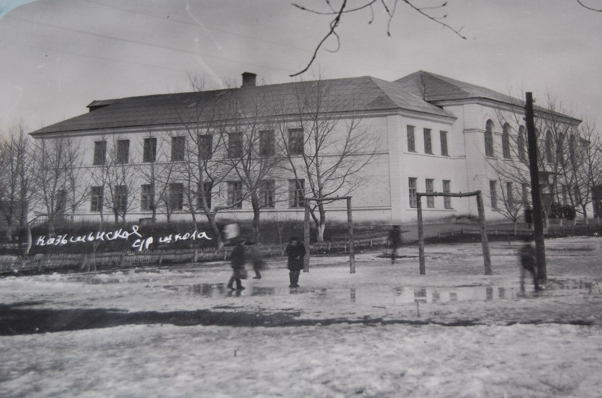Август 1929 года. Решением Либкнехтосвкого районного совета в селе Казьмиском была открыта средняя школа, действующая и по настоящее время. С тех пор 1929-1930 учебный год является первым в истории современной школы, которая в 2022-2023 учебном году насчитывает уже 93 года!
1952 год. Первый послевоенный выпуск. Школу заканчивают 12 человек. Среди них – первый медалист – Николай Михайлович Дегтярев.
1954 год. Первыми в Кочубеевском районе на инициативу Григорополисской школы по созданию ученических производственных бригад откликаются казьминцы: в школе под руководством Ярушко Владимира Михайловича, Астафьева Леонида Прокофьевича, Чмырева Николая Степановича, Солдатовой Валентины Константиновны создается ученическая производственная бригада «Мечта». Всемерная поддержка со сстороны председателя колхоза, Героя Социалистического труда Григория Захаровича Жиляева, кропотливый труд казьминских школьников, их энтузиазм и стремление к высоким результатам уже в 1958 году приводят бригаду к победе: она становится лучшей в крае.
В 1958 году колхоз «Казьминский» посетил глава государства Н.С.Хрущёв. В составе правительственной делегации был и министр сельского хозяйства Египта, проявивший особый интерес к работе ученической бригады. Члены бригады неоднократно становились участниками Всесоюзной Выставки Достижений Народного Хозяйства, её бригадиры — делегатами съездов ВЛКСМ, Всесоюзных слётов УПБ.
В конце 50-х гг. под руководством учителя физики и математики Владимира Михайловича Ярушко ребята стали совершать пешие походы по району и в горы Кавказа. В 1959 году юные туристы совершили первый многодневный поход к Чёрному морю. Так, в 50-е годы, в нашей школе зародилось детское туристско-краеведческое движение.
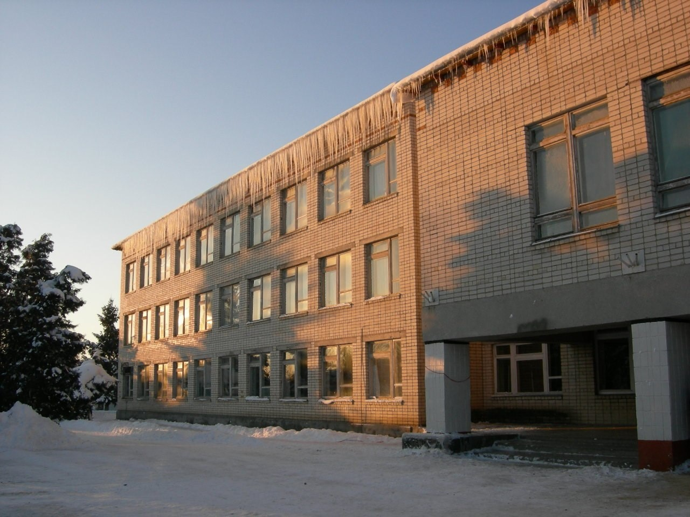В 1963 году распахивает двери новое просторное двухэтажное здание школы в центре села. В его стенах и в наши дни учатся ребята начальной школы.
В 70-е годы одним из главных событий стало празнование 30-летия Победы. 9 мая 1975 года по инициативе председателя колхоза «Казьминский» А.А.Шумского был открыт мемориал Вечной Славы в центре села. Активное участие в этом знаковом событии приняла наша школа. В том же 1975 году в селе открывается историко-краеведческий музей. Все школы объединяются в единое учреждение, руководителем которого становится Е.К.Белан.
В истории Казьминской школы 1980-е годы были насыщены значимыми событиями: в 1983 году благодаря Александру Алексеевичу Шумскому возводится новое трёхэтажное здание школы.. В день Конституции СССР (7 октября) оно было торжественно открыто, а 1 июня 1989г. состоялось торжественное открытие нового культстана УПБ. Школа становится одним из базовых центров по военно-патриотическому воспитанию молодёжи, принимает региональные смотры военно-патриотических отрядов «Зарница» и «Орлёнок».
Команда туристов школы под руководством учителя физической культуры В.И.Ковшова становится лидером в районе и крае, принимает участие в республиканских соревнованиях и входит в десятку лучших команд РСФСР.
В 80-е годы в школе возникает поисковый отряд, силами которого и под руководством учителя Е.В.Ремесковой, создаётся класс-музей памяти белорусского комсомольца Михаила Мороза, спасшего, ценою своей жизни, десятки жителей от неразорвавшегося снаряда времён войны.
Последним ярким событием уходящей советской эпохи в истории школы можно считать творческую встречу педагогического коллектива в сентябре 1990 года с народной артисткой СССР Людмилой Зыкиной, которая по приглашению правления колхоза «Казьминский» посетила наше село и дала незабываемый концерт в Доме культуры.
1991, декабрь - распад Советского Союза. Начало новой эпохи , эпохи испытаний! 90-е годы – горькая страница в истории страны, в истории школы. В ходе Чеченской войны тысячи российских ребят сложили свои головы, отстаивая суверенитет и целостность России. Среди них и наши выпускники: Сергей Викторович Жук, Александр Николаевич Крикунов, Андрей Викторович Семешко. С тех пор мы свято бержем память о наших ребятах, и будем хранить ее как и боль невосполнимой утраты вечно.
Радикальные изменения коснулись и образование. Но не смотря на это школа жила, учила и воспитывала. В 1994 году в школе да и в районе впервые отмечался юбилей образовательного учреждения Нашей школе тогда исполнилось 65 лет. Не обошлось без подарков. В школе появились первый видеомагнитофон и ксерокс. Тяжелый период для образования в целом, в том числе и для коллектива нашей школы, с забастовками учителей, массовым обнищанием людей, разрушением лучших образовательных традиций Казьминская школа пережила благодаря всемерной поддержке со стороны руководства колхоза «Казьминский» и сплоченности коллектива школы, преданности педагогов своему призванию - нести свет разумного, доброго, вечного! В безвременье 90-х коллектив не только сохранил себя, но и не растерял свои силы к педагогическому творчеству.